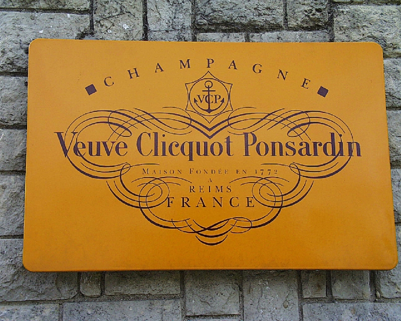

뵈브 클리코 Veuve Clicquot
뵈브 클리코(Veuve Clicquot)는 1772년 프랑스 랭스에서 설립된 샴페인 하우스로, 세계에서 가장 큰 샴페인 생산자 중 하나이다.
최종 업데이트

뵈브 클리코는 어떤 브랜드인가
뵈브 클리코는 랭스에 기반을 둔 샴페인 하우스로 최초로 알려진 빈티지 샴페인과 최초의 블렌드 로제 샴페인을 만든 것으로 평가받는다. 19세기 초 바르브-니콜 퐁사르당이 남편의 사업을 물려받아 회사를 이끌며 나폴레옹 전쟁기 러시아를 비롯한 유럽 왕실과 상류층 사이에서 샴페인을 대표하는 브랜드로 자리매김시켰다.
19세기 후반부터는 독특한 금색-노란색 레이블을 사용해 왔으며 이는 지금까지 브랜드를 상징한다. 1986년 루이비통에 인수된 이후 현재는 LVMH의 일부로서 전 세계적으로 사업을 확장하고 있다.
뵈브 클리코는 어떻게 시작되고 성장했나
필리프 클리코는 1772년 랭스에서 포도주 사업을 시작했으며, 1801년 은퇴하며 아들 프랑수아 클리코에게 경영권을 넘겼다. 1798년 프랑수아 클리코는 퐁사르당 가문의 바르브-니콜과 결혼했고, 1805년 그가 갑작스러운 열병으로 사망하자 27세의 과부였던 바르브-니콜이 사업을 인수해 프랑스 최초의 여성 사업가 중 한 명이 되었다.
1810년 그녀는 자신의 회사 뵈브 클리코-퐁사르당을 출범시켰고, 나폴레옹 전쟁 중 해상 봉쇄를 뚫고 러시아 시장에 샴페인을 선적하는 사업상 도박을 감행해 성공을 거두었다. 이후 러시아 왕실의 선호를 얻으며 뵈브 클리코라는 이름이 널리 알려지게 되었다.
뵈브 클리코의 브랜드 아이덴티티는 무엇인가
뵈브 클리코는 최초의 여성 샴페인 생산자로 불리는 바르브-니콜 퐁사르당이 이끌었던 역사와, 19세기 후반부터 사용해온 독특한 금색-노란색 레이블로 다른 샴페인 브랜드와 구분된다.
뵈브 클리코의 대표 제품과 서비스는 무엇인가
바르브-니콜 퐁사르당은 1810년 최초로 알려진 빈티지 샴페인을 만들고, 1816년에는 샴페인을 투명하게 하는 레뮈아주 테이블 공정을 발명했다. 1818년에는 스틸 적포도주와 백포도주를 혼합한 최초의 블렌드 로제 샴페인을 만들었으며, 이 공정은 현재도 대부분의 샴페인 생산자들이 사용하고 있다.
1877년부터는 포도주에 노란색 레이블을 사용하기 시작해 뵈브 클리코 퐁사르당 옐로 레이블이라는 상표로 등록했다.
뵈브 클리코 로고는 어떻게 변해왔나
자주 묻는 질문
뵈브 클리코는 어느 나라 브랜드인가요?
뵈브 클리코는 프랑스의 식음료 브랜드입니다.
뵈브 클리코의 브랜드 아이덴티티는 무엇인가요?
뵈브 클리코는 최초의 여성 샴페인 생산자로 불리는 바르브-니콜 퐁사르당이 이끌었던 역사와, 19세기 후반부터 사용해온 독특한 금색-노란색 레이블로 다른 샴페인 브랜드와 구분된다.
뵈브 클리코의 대표 제품은 무엇인가요?
바르브-니콜 퐁사르당은 1810년 최초로 알려진 빈티지 샴페인을 만들고, 1816년에는 샴페인을 투명하게 하는 레뮈아주 테이블 공정을 발명했다.
뵈브 클리코의 본사는 어디에 있나요?
뵈브 클리코의 본사는 랭스에 있습니다(위키데이터 기준).
뵈브 클리코의 모기업은 어디인가요?
뵈브 클리코의 모기업은 LVMH입니다(위키데이터 기준).
뵈브 클리코의 공식 웹사이트는 어디인가요?
뵈브 클리코의 공식 웹사이트는 https://www.veuve-clicquot.com/ 입니다.
출처와 검증
뵈브 클리코 관련 참고: 공식 웹사이트 · 위키데이터 Q610350 · 한국어 위키백과 · 영어 위키백과. 브랜드명은 한글과 원어를 함께 표기하되 데이터에 없는 표기는 만들지 않습니다. 기원 국가·설립연도는 검수된 정의문에서 확인된 값을 우선하고, 없을 때만 공식 웹사이트 URL이 일치하는 위키데이터 개체의 값을 씁니다. 위키데이터 값은 2026-09-26 기준입니다.